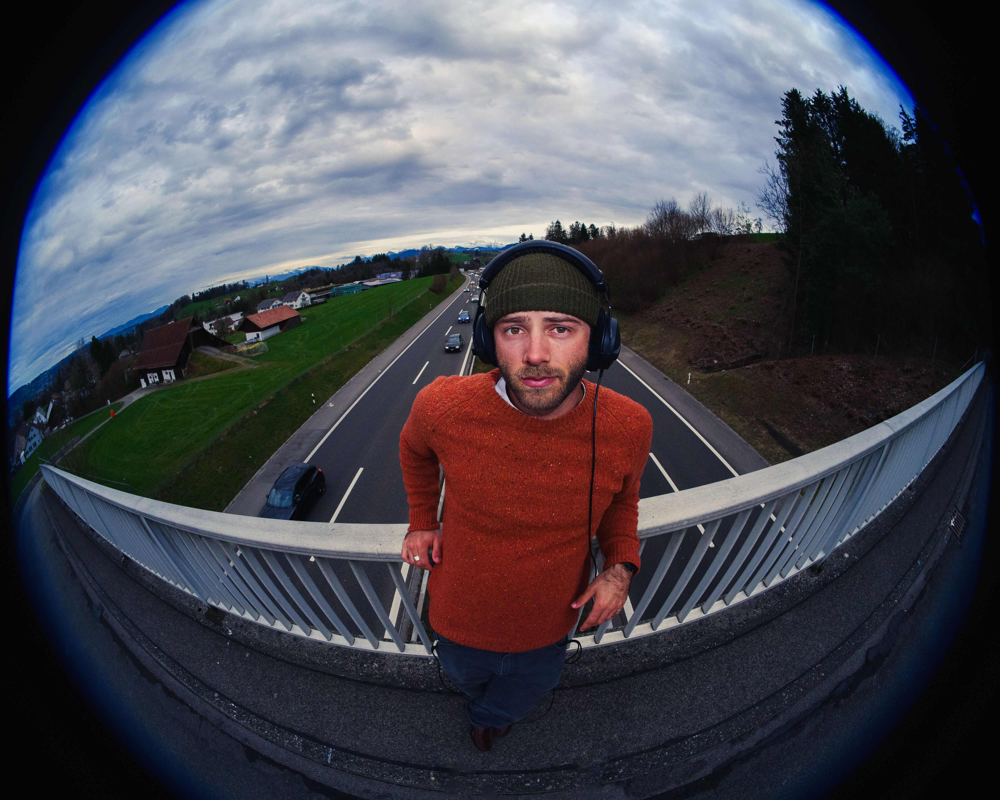

Manderinli Bilderbuech
Second Single off of upcoming album "Chloé" by Samuel Okkosch
Über die Single / About the Single
Deutsch
„Manderinli Bilderbuech“ ist das Mundart-Debüt von Samuel Okkosch – eine zart-skurrile Liebesgeschichte zwischen einer Schnecke und einer Libelle, die durch die Augen des anderen die Welt neu entdecken. Inspiriert von Kinderbüchern, in denen tiefgründige Themen in einfachen, bildhaften Geschichten erzählt werden, nutzt Samuel die Leichtigkeit und Nahbarkeit des Schweizerdeutschen als erzählerisches Werkzeug.
Musikalisch angelehnt an Bands wie Dope Lemon oder Babe Rainbow, bringt Samuel mit „Manderinli Bilderbuech“ neue Farben und verspielte Töne in die Mundartszene.
Die Single ist der zweite und letzte Vorbote des Albums „Chloé“, das am 28. Mai erscheint.
English
“Manderinli Bilderbuech” is the Swiss German debut of Samuel Okkosch – a tender, whimsical love story between a snail and a dragonfly who rediscover the world through each other’s eyes. Inspired by children’s books that wrap deep, human themes in simple, visual storytelling, Samuel uses the intimacy and lightness of Swiss German as a narrative tool.
Musically drawing from bands like Dope Lemon and Babe Rainbow, Manderinli Bilderbuech brings playful new colors to the Swiss dialect music scene.
The single is the second and final preview of the upcoming album “Chloé”, set to be released on May 28.
Über mich / about me
Deutsch
Samuel Okkosch verbringt seine Sommer in Horgen am Zürichsee, wo er in seinem Wohnzimmerstudio seine Musik selbst produziert, und seine Winter im Engadin als Skilehrer. Seine Musik ist ein farbenfrohes Mischmasch aus Alt-Country Klängen, Slacker-Rock-Gitarren, Wilco-inspiriertem Folk-Revival und sanften Indie-Melodien. Seine Texte - mal auf Englisch, Deutsch, Mundart oder Französisch - erzählen kindlich-verspielt aus seinem Leben, ohne die Vielschichtigkeit unserer skurrilen Existenz zu übersehen.
Nach vier Jahren Sendepause sprudelt 2025 endlich wieder Musik aus Samuels Wohnzimmer: Im Januar blickt ein Compilation-Album auf alte Demos zurück, im März taucht die EP "I Brush My Teeth Like I’m Losing a Fight" in seine amerikanischen Wurzeln ein, und im Mai erzählt sein Album „Chloé" in 14 Songs die persönliche Geschichte einer prägenden Bekanntschaft. Gemeinsam mit Freunden bringt Samuel seine spielerisch verzierten Songarrangements auf die Bühne - ehrlich und voller Energie.
English
Samuel Okkosch spends his summers in Horgen by Lake Zurich, where he produces his music in his living room studio, and his winters in the Engadin as a ski instructor. His music is a colorful mix of alt-country sounds, slacker-rock guitars, Wilco-inspired folk revival, and gentle indie melodies. His lyrics - whether in English, German, Swiss German, or French — tell playful, childlike stories from his life while never losing sight of the complexity of our peculiar existence.
After a four-year hiatus, Samuel's living room is finally brimming with music again in 2025: In January, a compilation album looks back on old demos; in March, the EP "I Brush My Teeth Like I’m Losing a Fight" explores his American roots; and in May, his album "Chloé" tells the personal story of a formative encounter through 14 songs. Together with friends, Samuel brings his playfully adorned song arrangements to the stage — honest and full of energy.